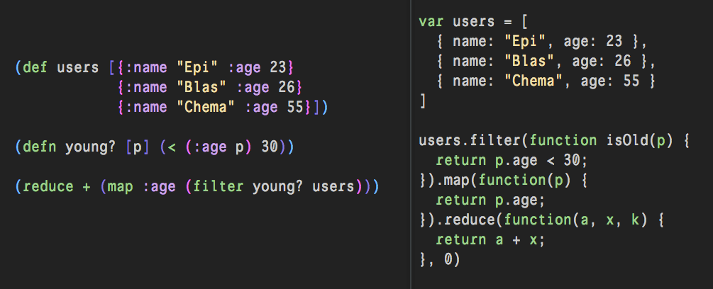

class: center, middle, inverse # Clojure and it's Ecosystem Yen-Chin, Lee [coldnew.tw@gmail.com] --- class: center, middle, inverse # Clojure --- class: center, middle # It is a LISP dialect --- class: center, middle --- class: center, middle --- class: center, middle --- class: center, middle  --- .left-column[ # Author ] .right-column[ <br> Rich Hickey (Author of Clojure) ] --- .left-column[ ## Company ] .right-column[ <br><br><br>  <br> <a id="join-button" target="_blank" class="btn btn-link btn-lg" href="http://cognitect.com/"> Cognitect (Company behind Clojure) </a> ] --- ## Clojure, ClojureScript, ClojureCLR <br><br><br>  <br> --- ## Try Clojure ([website](http://www.tryclj.com/)) <iframe id="try" src="http://www.tryclj.com/" frameborder="0" allowfullscreen></iframe> --- ## Try ClojureScript ([website](http://clojurescript.net/)) <iframe id="try" src="http://clojurescript.net/" frameborder="0" allowfullscreen></iframe> --- ## ClojureScript on-the-fly ([website](http://app.klipse.tech/)) <iframe id="try" src="http://app.klipse.tech/" frameborder="0" allowfullscreen></iframe> --- class: center, middle, inverse # Editors / IDEs --- name: editors .left-column[ # Editors ## emacs ] .right-column[ <br><br><br>  <a id="join-button" href="javascript:void(0);" class="btn btn-info btn-lg" onClick="cljslide.join.emacs()"> Go to Wbsite </a> ] --- .left-column[ # Editors ## emacs ## spacemacs ] .right-column[ <br><br><br>  <br><br> <a id="join-button" href="javascript:void(0);" class="btn btn-info btn-lg" onClick="cljslide.join.spacemacs()"> Go to Wbsite </a> ] --- .left-column[ # Editors ## emacs ## spacemacs ## vim ] .right-column[ <br><br><br>  <br><br> <a id="join-button" href="javascript:void(0);" class="btn btn-info btn-lg" onClick="cljslide.join.vim()"> Go to Wbsite </a> ] --- .left-column[ # Editors ## emacs ## spacemacs ## vim ## atom ] .right-column[ <br><br><br>  <br><br> <a id="join-button" href="javascript:void(0);" class="btn btn-info btn-lg" onClick="cljslide.join.atome()"> Go to Wbsite </a> ] --- name: ide .left-column[ # IDEs ## LightTable ] .right-column[ <br><br><br>  <a id="join-button" href="javascript:void(0);" class="btn btn-info btn-lg" onClick="cljslide.join.lighttable()"> Go to Wbsite </a> ] --- .left-column[ # IDEs ## LightTable ## NightCode ] .right-column[ <br><br><br>  <a id="join-button" href="javascript:void(0);" class="btn btn-info btn-lg" onClick="cljslide.join.nightcode()"> Go to Wbsite </a> ] --- .left-column[ # IDEs ## LightTable ## NightCode ## Cursive ] .right-column[ <br><br><br>  <a id="join-button" href="javascript:void(0);" class="btn btn-info btn-lg" onClick="cljslide.join.cursive()"> Go to Wbsite </a> ] --- class: center, middle, inverse # Building System --- name: build .left-column[ ## Leinigen ] .right-column[ <br><br><br>  <a id="join-button" target="_blank" class="btn btn-link btn-lg" href="http://leiningen.org/"> Go to Website </a> ] --- .left-column[ ## Leinigen ## Boot ] .right-column[ <br><br><br>  <a id="join-button" target="_blank" class="btn btn-link btn-lg" href="http://boot-clj.com/"> Go to Website </a> ] --- .left-column[ ## Leinigen ## Boot ## Inlein ] .right-column[ ```clojure #!/usr/bin/env inlein '{:dependencies [[org.clojure/clojure "1.8.0"] [com.hypirion/primes "0.2.1"]]} (require '[com.hypirion.primes :as p]) (when-not (first *command-line-args*) (println "Usage:" (System/getProperty "$0") "prime-number") (System/exit 1)) (-> (first *command-line-args*) (Long/parseLong) (p/get) println) ``` <a id="join-button" target="_blank" class="btn btn-link btn-lg" href="https://github.com/hyPiRion/inlein"> Go to Website </a> ] --- class: center, middle, inverse # Unit Testing --- name: unittest .left-column[ # Unit Testing ## Midje ] .right-column[ <br><br><br>  <a id="join-button" target="_blank" class="btn btn-link btn-lg" href="https://github.com/marick/Midje"> Go to Website </a> ] --- .left-column[ # Unit Testing ## Midje ## Speclj ] .right-column[ <br><br><br>  <a id="join-button" target="_blank" class="btn btn-link btn-lg" href="https://github.com/slagyr/speclj"> Go to Website </a> ] --- .left-column[ # Unit Testing ## Midje ## Speclj ## Expectations ] .right-column[ <br><br><br>  <a id="join-button" target="_blank" class="btn btn-link btn-lg" href="http://jayfields.com/expectations/"> Go to Website </a> ] --- .left-column[ # Unit Testing ## Midje ## Speclj ## Expectations ## Cloverage ] .right-column[ <br><br><br>  <a id="join-button" target="_blank" class="btn btn-link btn-lg" href="https://github.com/lshift/cloverage"> Go to Website </a> ] --- .left-column[ # Unit Testing ## Midje ## Speclj ## Expectations ## Cloverage ## Criterium ] .right-column[ <br><br><br>  <a id="join-button" target="_blank" class="btn btn-link btn-lg" href="https://github.com/hugoduncan/criterium"> Go to Website </a> ] --- .left-column[ # Unit Testing ## Midje ## Speclj ## Expectations ## Cloverage ## Criterium ## doo ] .right-column[ <br><br><br>  <a id="join-button" target="_blank" class="btn btn-link btn-lg" href="https://github.com/bensu/doo"> Go to Website </a> ] --- class: center, middle, inverse # Documentation --- name: doc .left-column[ # Documentation ## Marginalia ] .right-column[ <br><br><br>  <a id="join-button" target="_blank" class="btn btn-link btn-lg" href="https://github.com/gdeer81/marginalia"> Go to Website </a> ] --- .left-column[ # Documentation ## Marginalia ## Codox ] .right-column[ <br><br><br>  <a id="join-button" target="_blank" class="btn btn-link btn-lg" href="https://github.com/weavejester/codox"> Go to Website </a> ] --- .left-column[ # Documentation ## Marginalia ## Codox ## AutoDoc ] .right-column[ <br><br><br>  <a id="join-button" target="_blank" class="btn btn-link btn-lg" href="https://github.com/tomfaulhaber/autodoc"> Go to Website </a> ] --- class: center, middle, inverse # Web Frameworks or libraries --- name: web .left-column[ # Web Frameworks ## luminus ] .right-column[ <br><br><br><br><br>  <a id="join-button" target="_blank" class="btn btn-link btn-lg" href="http://www.luminusweb.net/"> Go to Website </a> ] --- .left-column[ # Web Frameworks ## luminus ## sente ] .right-column[ <br><br> <br><br><br>  <a id="join-button" target="_blank" class="btn btn-link btn-lg" href="https://github.com/ptaoussanis/sente"> Go to Website </a> ] --- .left-column[ # Web Frameworks ## luminus ## sente ## hoplon ## pedestal ] .right-column[ <br><br> <br><br><br> <iframe width="560" height="315" src="https://www.youtube.com/embed/Ohuadp9S2hg" frameborder="0" allowfullscreen></iframe> <a id="join-button" target="_blank" class="btn btn-link btn-lg" href="https://github.com/pedestal/pedestal"> Go to Website </a> ] --- .left-column[ # Web Frameworks ## luminus ## sente ## hoplon ## pedestal ## untangle ] .right-column[ <br><br> <br><br><br> <iframe width="560" height="315" src="https://www.youtube.com/embed/CoMyszwN50g" frameborder="0" allowfullscreen></iframe> <a id="join-button" target="_blank" class="btn btn-link btn-lg" href="http://untangled-web.github.io/untangled/"> Go to Website </a> ] --- .left-column[ # Web Frameworks ## luminus ## sente ## hoplon ## pedestal ## untangle ## yada ] .right-column[ <br><br> <br><br><br> <iframe width="560" height="315" src="https://www.youtube.com/embed/tKFrqsFC1XM" frameborder="0" allowfullscreen></iframe> <a id="join-button" target="_blank" class="btn btn-link btn-lg" href="https://github.com/juxt/yada"> Go to Website </a> ] --- .left-column[ # Web Frameworks ## luminus ## sente ## hoplon ## pedestal ## untangle ## yada ## compojure, ring ] .right-column[ <br><br> <br><br><br> <iframe width="560" height="315" src="https://www.youtube.com/embed/_LghX4oDWcY" frameborder="0" allowfullscreen></iframe> <a id="join-button" target="_blank" class="btn btn-link btn-lg" href="https://github.com/weavejester/compojure"> Go to Website </a> ] --- class: center, middle, inverse # Database --- name: db .left-column[ # Database ## datomic ] .right-column[ <br><br><br><br> <iframe width="560" height="315" src="https://www.youtube.com/embed/RKcqYZZ9RDY" frameborder="0" allowfullscreen></iframe> <a id="join-button" target="_blank" class="btn btn-link btn-lg" href="http://www.datomic.com/"> Go to Website </a> ] --- .left-column[ # Database ## datomic ## Korma ] .right-column[ <br><br><br><br>  <a id="join-button" target="_blank" class="btn btn-link btn-lg" href="http://sqlkorma.com/"> Go to Website </a> ] --- .left-column[ # Database ## datomic ## Korma ## HugSQL ] .right-column[ <br><br><br><br>  <a id="join-button" target="_blank" class="btn btn-link btn-lg" href="http://www.hugsql.org/"> Go to Website </a> ] --- .left-column[ # Database ## datomic ## Korma ## HugSQL ## YeSQL ] .right-column[ <br><br><br><br>  <a id="join-button" target="_blank" class="btn btn-link btn-lg" href="https://github.com/krisajenkins/yesql"> Go to Website </a> ] --- .left-column[ # Database ## datomic ## Korma ## HugSQL ## YeSQL ## Honey SQL ] .right-column[ <br><br><br><br> <iframe width="560" height="315" src="https://www.youtube.com/embed/alkcjyhesjI" frameborder="0" allowfullscreen></iframe> <a id="join-button" target="_blank" class="btn btn-link btn-lg" href="https://github.com/jkk/honeysql"> Go to Website </a> ] --- .left-column[ # Database ## datomic ## Korma ## HugSQL ## YeSQL ## Honey SQL ## clojure.java.jdbc ] .right-column[ <br><br><br><br>  <a id="join-button" target="_blank" class="btn btn-link btn-lg" href="https://github.com/clojure/java.jdbc"> Go to Website </a> ] --- class: center, middle, inverse # Distributed System --- name: distribute .left-column[ # Distributed System ## Storm ] .right-column[ <br><br><br><br><br>  <a id="join-button" target="_blank" class="btn btn-link btn-lg" href="http://storm.apache.org/"> Go to Website </a> ] --- .left-column[ # Distributed System ## Storm ## Onyx ] .right-column[ <br><br><br><br><br> <iframe width="560" height="315" src="https://www.youtube.com/embed/vG47Gui3hYE" frameborder="0" allowfullscreen></iframe> <a id="join-button" target="_blank" class="btn btn-link btn-lg" href="http://www.onyxplatform.org/"> Go to Website </a> ] --- .left-column[ # Distributed System ## Storm ## Onyx ## Cascalog ] .right-column[ <br><br><br><br><br> <iframe width="560" height="315" src="https://www.youtube.com/embed/uuJW3EaN_3Q" frameborder="0" allowfullscreen></iframe> <a id="join-button" target="_blank" class="btn btn-link btn-lg" href="http://cascalog.org/"> Go to Website </a> ] --- .left-column[ # Distributed System ## Storm ## Onyx ## Cascalog ## Jepsen ] .right-column[ <br><br><br><br><br> <iframe width="560" height="315" src="https://www.youtube.com/embed/QdkS6ZjeR7Q" frameborder="0" allowfullscreen></iframe> <a id="join-button" target="_blank" class="btn btn-link btn-lg" href="https://github.com/aphyr/jepsen"> Go to Website </a> ] --- .left-column[ # Distributed System ## Storm ## Onyx ## Cascalog ## Jepsen ## Riemann ] .right-column[ <br><br><br><br><br> <iframe src="https://player.vimeo.com/video/131385889" width="500" height="315" frameborder="0" webkitallowfullscreen mozallowfullscreen allowfullscreen></iframe> <a id="join-button" target="_blank" class="btn btn-link btn-lg" href="http://riemann.io/"> Go to Website </a> ] --- class: center, middle, inverse # Interesting Projects or Libraries --- .left-column[ ## core.async ### - code ] .right-column[ ```clojure (ns cljslide.example.core-async (:require-macros [cljs.core.async.macros :refer [go go-loop]]) (:require [cljs.core.async :refer [<! timeout]])) (def colors ["#FF0000" "#00FF00" "#0000FF" "#00FFFF" "#FFFF00" "#FF00FF"]) (defn make-cell [canvas x y] (let [ctx (-> js/document (.getElementById canvas) (.getContext "2d"))] (go (while true (set! (.-fillStyle ctx) (rand-nth colors)) (.fillRect ctx x y 10 10) (<! (timeout (rand-int 1000))))))) (defn make-scene [canvas rows cols] (dotimes [x cols] (dotimes [y rows] (make-cell canvas (* 10 x) (* 10 y))))) (make-scene "canvas" 100 100) ``` ] --- .left-column[ ## core.async ### - code ### - demo ] .right-column[ <br><br> <canvas id="core-async-example" width="500" height="400"></canvas> ] --- .left-column[ ## core.async ### - code ### - demo ### - video ] .right-column[ <br><br> <iframe width="560" height="315" src="https://www.youtube.com/embed/enwIIGzhahw" frameborder="0" allowfullscreen></iframe> <a id="join-button" target="_blank" class="btn btn-link btn-lg" href="https://github.com/clojure/core.async"> Go to Website </a> ] --- .left-column[ ## core.logic ] .right-column[ <br><br> <iframe width="560" height="315" src="https://www.youtube.com/embed/irjP8BO1B8Y" frameborder="0" allowfullscreen></iframe> <a id="join-button" target="_blank" class="btn btn-link btn-lg" href="https://github.com/clojure/core.logic"> Go to Website </a> ] --- .left-column[ ## core.matrix ] .right-column[ <br><br> <iframe width="560" height="315" src="https://www.youtube.com/embed/_h9TLJtjSJo" frameborder="0" allowfullscreen></iframe> <a id="join-button" target="_blank" class="btn btn-link btn-lg" href="https://github.com/mikera/core.matrix"> Go to Website </a> ] --- .left-column[ ## incanter ] .right-column[ <br><br>  <a id="join-button" target="_blank" class="btn btn-link btn-lg" href="https://github.com/incanter/incanter"> Go to Website </a> ] --- .left-column[ ## quil ### - code ] .right-column[ <br><br> ```clojure (ns cljslide.example.quil (:require [quil.core :as q :include-macros true] [quil.middleware :as m])) (defn draw-carousel [] (q/background 255) (q/no-stroke) (q/fill 252 90 44) (let [radians (/ (q/frame-count) 20) x (+ 150 (* 100 (q/cos radians))) y (+ 150 (* 100 (q/sin radians))) width 30 height 30] (q/ellipse x y, width height))) (q/defsketch hello-quil :host "quil-example" :size [300 300] :draw #'draw-carousel) ``` ] --- .left-column[ ## quil ### - code ### - demo ] .right-column[ <br><br> <canvas id="quil-example" width="500" height="400"></canvas> ] --- .left-column[ ## quil ### - code ### - demo ### - video ] .right-column[ <br><br> <iframe width="560" height="315" src="https://www.youtube.com/embed/n0yN1GauxCA" frameborder="0" allowfullscreen></iframe> <a id="join-button" target="_blank" class="btn btn-link btn-lg" href="https://github.com/quil/quil"> Go to Website </a> ] --- .left-column[ ## figwheel ] .right-column[ <br><br> <br> <iframe width="560" height="315" src="https://www.youtube.com/embed/j-kj2qwJa_E" frameborder="0" allowfullscreen></iframe> <a id="join-button" target="_blank" class="btn btn-link btn-lg" href="https://github.com/bhauman/lein-figwheel"> Go to Website </a> ] --- .left-column[ ## LAMBDACD ] .right-column[ <br><br> <br> <iframe width="560" height="315" src="https://www.youtube.com/embed/XXiAS_BEDhQ" frameborder="0" allowfullscreen></iframe> <a id="join-button" target="_blank" class="btn btn-link btn-lg" href="http://www.lambda.cd/"> Go to Website </a> ] --- .left-column[ ## Instaparse ] .right-column[ <br><br> <br> <iframe width="560" height="315" src="https://www.youtube.com/embed/b2AUW6psVcE" frameborder="0" allowfullscreen></iframe> <a id="join-button" target="_blank" class="btn btn-link btn-lg" href="https://github.com/Engelberg/instaparse"> Go to Website </a> ] --- .left-column[ ## core.typed ] .right-column[ <br><br> <br> <iframe width="560" height="315" src="https://www.youtube.com/embed/yG9CffLlXx0" frameborder="0" allowfullscreen></iframe> <a id="join-button" target="_blank" class="btn btn-link btn-lg" href="https://github.com/clojure/core.typed"> Go to Website </a> ] --- .left-column[ ## Schema ] .right-column[ <br><br> <br> <iframe width="560" height="315" src="https://www.youtube.com/embed/o_jtwIs2Ot8" frameborder="0" allowfullscreen></iframe> <a id="join-button" target="_blank" class="btn btn-link btn-lg" href="https://github.com/plumatic/schema"> Go to Website </a> ] --- .left-column[ ## luno-react-native ] .right-column[ <br><br> <br>  <a id="join-button" target="_blank" class="btn btn-link btn-lg" href="https://github.com/alwx/luno-react-native"> Go to Website </a> ] --- class: center, middle, inverse # Resources for learning Clojure --- name: resource .left-column[ ## Resources ### Clojure Website ] .right-column[ <br><br><br>  <a id="join-button" target="_blank" class="btn btn-link btn-lg" href="http://clojure.org/"> Go to Website </a> ] --- .left-column[ ## Resources ### Clojure Website ### Books ] .right-column[ <br><br><br>  <a id="join-button" target="_blank" class="btn btn-link btn-lg" href="http://clojure.org/community/books"> Go to Website </a> ] --- .left-column[ ## Resources ### Clojure Website ### Books ### Workshops ] .right-column[ <br><br><br>  <a id="join-button" target="_blank" class="btn btn-link btn-lg" href="http://www.clojurebridge.org/"> Go to Website </a> ] --- .left-column[ ## Resources ### Clojure Website ### Books ### Workshops ### ClojureDocs ] .right-column[ <br><br><br>  <a id="join-button" target="_blank" class="btn btn-link btn-lg" href="https://clojuredocs.org/"> Go to Website </a> ] --- .left-column[ ## Resources ### Clojure Website ### Books ### Workshops ### ClojureDocs ### Grimoire ] .right-column[ <br><br><br>  <a id="join-button" target="_blank" class="btn btn-link btn-lg" href="https://www.conj.io/"> Go to Website </a> ] --- .left-column[ ## Resources ### Clojure Website ### Books ### Workshops ### ClojureDocs ### Grimoire ### Clojure Toolbox ] .right-column[ <br><br><br>  <a id="join-button" target="_blank" class="btn btn-link btn-lg" href="http://www.clojure-toolbox.com/"> Go to Website </a> ] --- .left-column[ ## Resources ### Clojure Website ### Books ### Workshops ### ClojureDocs ### Grimoire ### Clojure Toolbox ### Clojure Style Guide ] .right-column[ <br><br><br>  <a id="join-button" target="_blank" class="btn btn-link btn-lg" href="https://github.com/bbatsov/clojure-style-guide"> Go to Website </a> ] --- class: center, middle, inverse # Exercise --- name: exercise .left-column[ ## Exercise ### 4Clojure ] .right-column[ <br><br><br>  <a id="join-button" target="_blank" class="btn btn-link btn-lg" href="https://www.4clojure.com/"> Go to Website </a> ] --- .left-column[ ## Exercise ### 4Clojure ### Clojure Koans ] .right-column[ <br><br><br>  <a id="join-button" target="_blank" class="btn btn-link btn-lg" href="http://clojurekoans.com/"> Go to Website </a> ] --- .left-column[ ## Exercise ### 4Clojure ### Clojure Koans ### Wonderland katas ] .right-column[ <br><br><br>  <a id="join-button" target="_blank" class="btn btn-link btn-lg" href="https://github.com/gigasquid/wonderland-clojure-katas"> Go to Website </a> ] --- .left-column[ ## Exercise ### 4Clojure ### Clojure Koans ### Wonderland katas ### exercism.io ] .right-column[ <br><br><br>  <a id="join-button" target="_blank" class="btn btn-link btn-lg" href="http://exercism.io/"> Go to Website </a> ] --- class: center, middle, inverse # Clojure Communities --- name: community .left-column[ ## Clojure Communities ### - Slack ] .right-column[ <br><br><br>  <a id="join-button" href="javascript:void(0);" class="btn btn-primary btn-lg" onClick="cljslide.join.slack()"> Join to Slack </a> ] --- .left-column[ ## Clojure Communities ### - Slack ### - IRC (#clojure at freenode.net) ] .right-column[ <br><br><br>  <a id="join-button" href="javascript:void(0);" class="btn btn-primary btn-lg" onClick="cljslide.join.irc()"> Join to IRC </a> ] --- .left-column[ ## Clojure Communities ### - Slack ### - IRC (#clojure at freenode.net) ### - Mailing-List ] .right-column[ <br><br><br>  <a id="join-button" href="javascript:void(0);" class="btn btn-primary btn-lg" onClick="cljslide.join.mailing_list()"> Go to Clojure Mailing-List </a> ] --- class: center, middle, inverse # Clojure Community in Taiwan --- name: communitytw .left-column[ ## [clojure.tw](http://clojure-tw.github.io) ### - Slack (#clojure-taiwan) ] .right-column[ <br><br><br>  <a id="join-button" href="javascript:void(0);" class="btn btn-success btn-lg" onClick="cljslide.join.slack()"> Join to Slack </a> ] --- .left-column[ ## [clojure.tw](http://clojure-tw.github.io) ### - Slack ### - Telegram ] .right-column[ <br><br>  <a id="join-button" href="javascript:void(0);" class="btn btn-success btn-lg" onClick="cljslide.join.telegram_tw()"> Join to Telegram </a> ] --- .left-column[ ## [clojure.tw](http://clojure-tw.github.io) ### - Slack ### - Telegram ### - Facebook ] .right-column[ <br><br><br>  <a id="join-button" href="javascript:void(0);" class="btn btn-success btn-lg" onClick="cljslide.join.facebook_tw()"> Join to Facebook </a> ] --- .left-column[ ## [clojure.tw](http://clojure-tw.github.io) ### - Slack ### - Telegram ### - Facebook ### - Twitter ] .right-column[ <br><br><br>  <a id="join-button" href="javascript:void(0);" class="btn btn-success btn-lg" onClick="cljslide.join.twitter_tw()"> Join to Twitter </a> ] --- .left-column[ ## [clojure.tw](http://clojure-tw.github.io) ### - Slack ### - Telegram ### - Facebook ### - Twitter ### - Meetup ] .right-column[ <br><br><br>  <a id="join-button" href="javascript:void(0);" class="btn btn-success btn-lg" onClick="cljslide.join.meetup_tw()"> Join to Meetup </a> ] --- .left-column[ ## [clojure.tw](http://clojure-tw.github.io) ### - Slack ### - Telegram ### - Facebook ### - Twitter ### - Meetup ### - GitHub ] .right-column[ <br><br><br>  <a id="join-button" href="javascript:void(0);" class="btn btn-success btn-lg" onClick="cljslide.join.github_tw()"> Go to GitHub </a> ] --- class: center, middle, inverse # Conferences --- .left-column[ # Conference ## Clojure/West ] .right-column[ <br><br><br>  <a id="join-button" target="_blank" class="btn btn-danger btn-lg" href="https://www.youtube.com/watch?v=6DaBmz_6y0s&list=PLZdCLR02grLrKAOj8FJ1GGmNM5l7Okz0a"> See Videos </a> <a id="join-button" target="_blank" class="btn btn-link btn-lg" href="http://clojurewest.org/"> Go to Website </a> ] --- .left-column[ # Conference ## Clojure/West ## Clojure/conj ] .right-column[ <br><br><br>  <a id="join-button" target="_blank" class="btn btn-danger btn-lg" href="https://www.youtube.com/watch?v=Y2jQe8DFzUM&list=PLZdCLR02grLrl5ie970A24kvti21hGiOf"> See Videos </a> <a id="join-button" target="_blank" class="btn btn-link btn-lg" href="http://clojure-conj.org/"> Go to Website </a> ] --- .left-column[ # Conference ## Clojure/West ## Clojure/conj ## EuroClojure ] .right-column[ <br><br><br>  <a id="join-button" target="_blank" class="btn btn-danger btn-lg" href="https://www.youtube.com/watch?v=ByNs9TG30E8&list=PLZdCLR02grLoBx0Y5ZrpdmLxc160PIwzQ"> See Videos </a> <a id="join-button" target="_blank" class="btn btn-link btn-lg" href="http://euroclojure.com/"> Go to Website </a> ] --- class: center, middle, inverse # Find Clojure Jobs --- .left-column[ ## Find Jobs ] .right-column[ ### BRAVE CLOJURE JOBS <br>  <a id="join-button" target="_blank" class="btn btn-link btn-lg" href="https://jobs.braveclojure.com/"> Go to Website </a> ] --- .left-column[ ## Find Jobs ] .right-column[ ### indeed <br>  <a id="join-button" target="_blank" class="btn btn-link btn-lg" href="http://www.indeed.com/q-clojure-l-Remote-jobs.html"> Go to Website </a> ] --- .left-column[ ## Find Jobs ] .right-column[ ### remoteok.io <br>  <a id="join-button" target="_blank" class="btn btn-link btn-lg" href="https://remoteok.io/remote-clojure-jobs"> Go to Website </a> ] --- .left-column[ ## Find Jobs ] .right-column[ ### Functional Jobs <br>  <a id="join-button" target="_blank" class="btn btn-link btn-lg" href="https://functionaljobs.com/jobs/search/?q=clojure"> Go to Website </a> ] --- .left-column[ ## Find Jobs ] .right-column[ ### Functional Works <br>  <a id="join-button" target="_blank" class="btn btn-link btn-lg" href="https://jobs.functionalworks.com/#/job-board"> Go to Website </a> ] --- .left-column[ ## Find Jobs ] .right-column[ ### Lisp Jobs <br>  <a id="join-button" target="_blank" class="btn btn-link btn-lg" href="https://lispjobs.wordpress.com/"> Go to Website </a> ] --- .left-column[ ## Find Jobs ] .right-column[ ### Linkedin <br>  <a id="join-button" target="_blank" class="btn btn-link btn-lg" href="https://www.linkedin.com/groups/6620522"> Go to Website </a> ] --- class: center, middle # Thank you